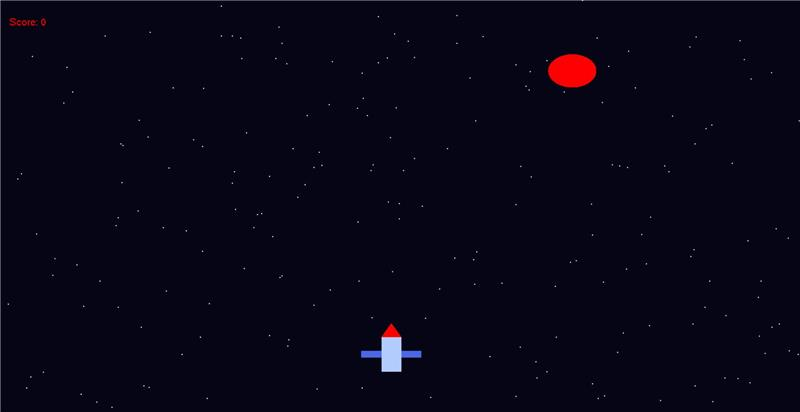
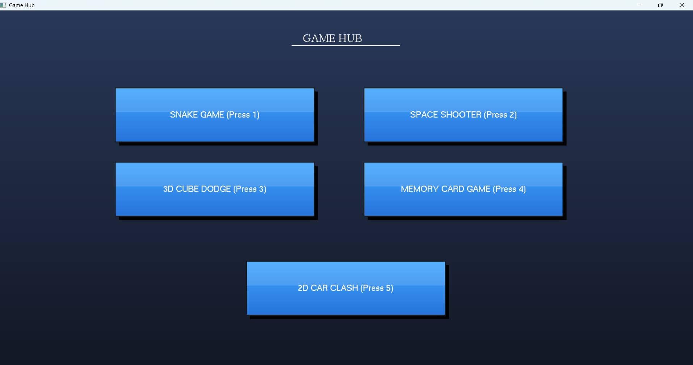
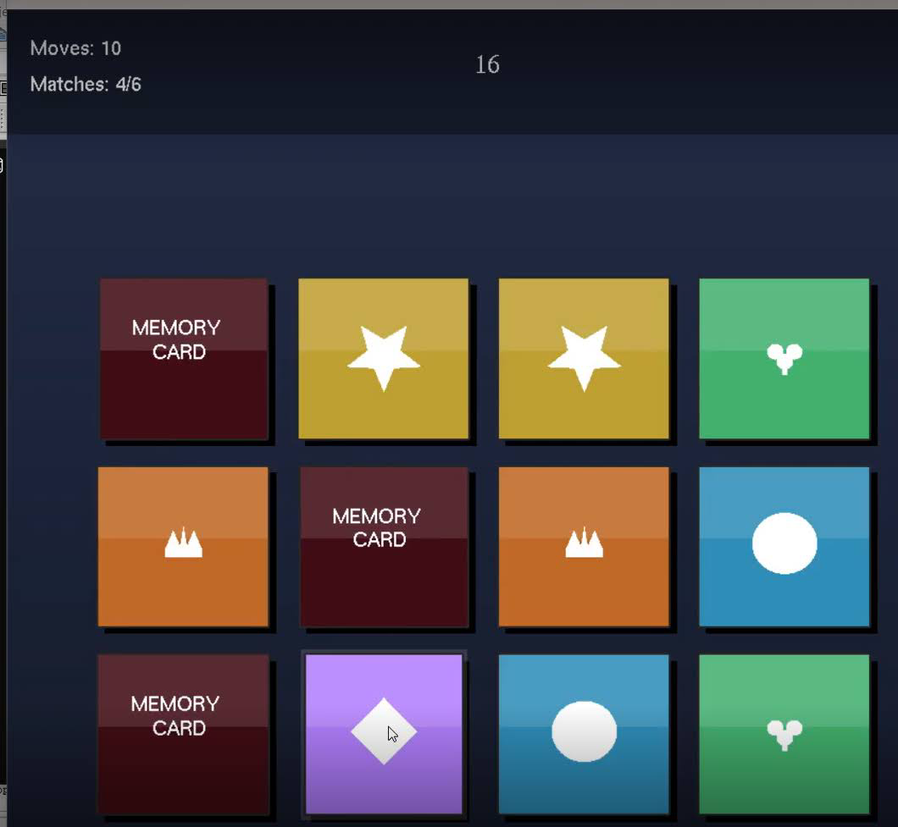
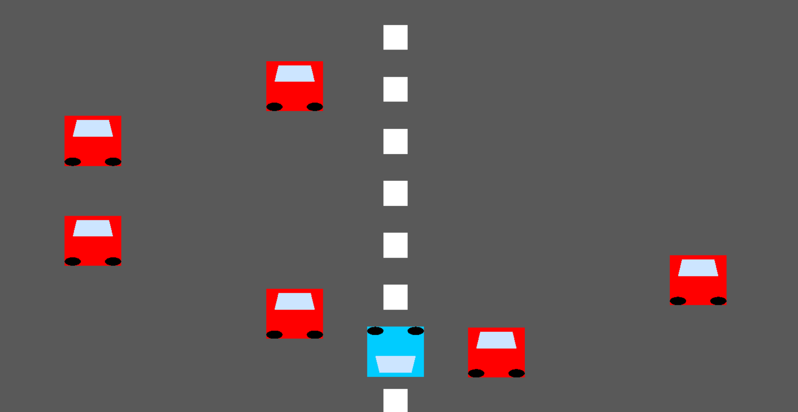
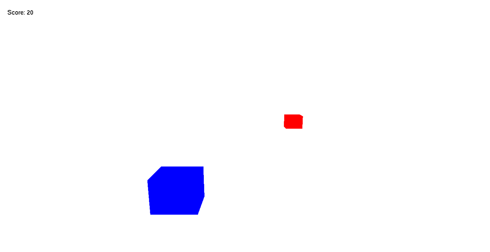
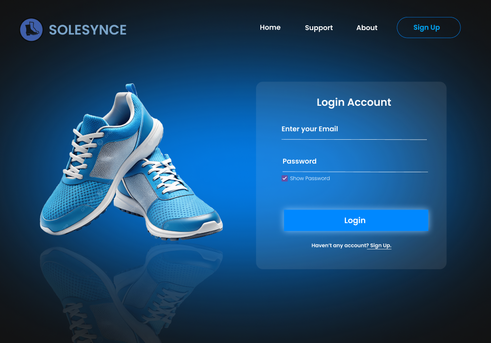
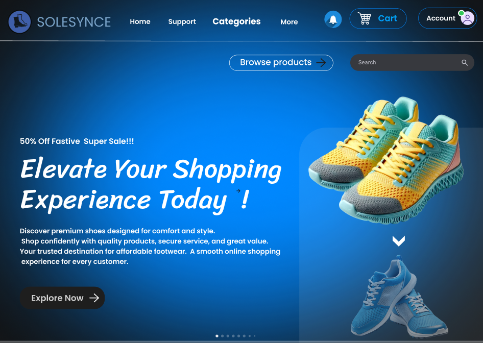
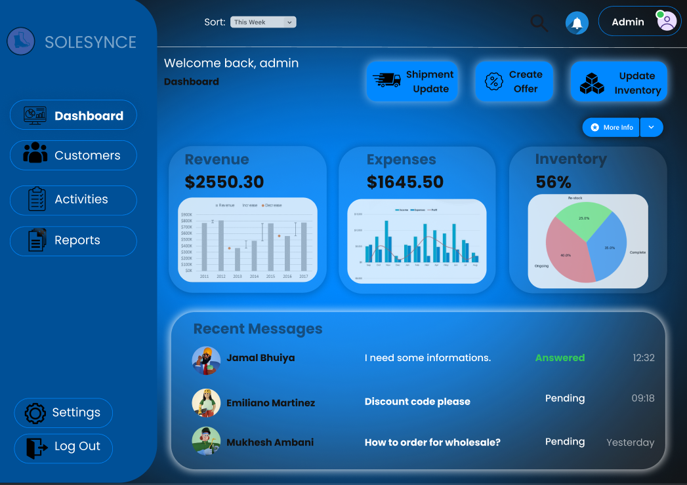
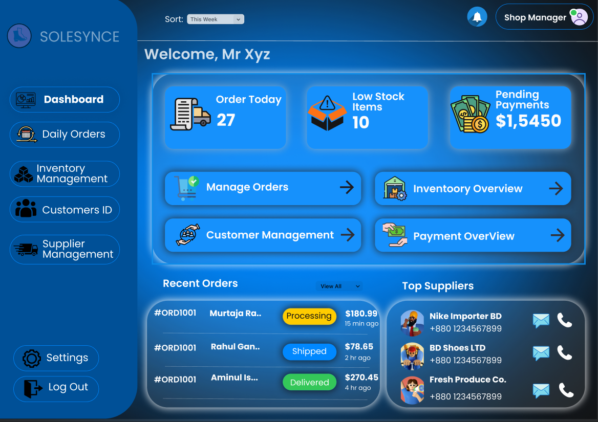
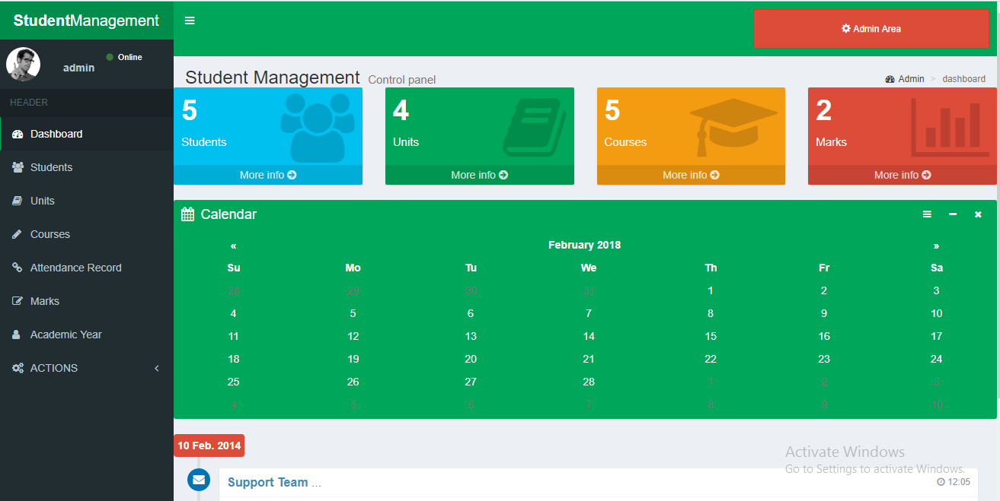

Projects
Game Hub – Collection of Mini Games





Game Hub is a web-based platform that contains multiple mini games
integrated into a single system. Users can select and play different
games through an interactive and user-friendly interface. This project
was conducted using OpenGL with the help of FreeGLUT.
The game includes score tracking, responsive design, and smooth
user navigation between games.
Skills Used: PHP, MySQL, HTML, CSS, JavaScript
Wholesale Management System





The Wholesale Management System is a database-driven application
designed to manage product inventory, supplier information, sales records,
and customer data efficiently.
It includes features such as product stock management, billing system,
sales tracking, and secure admin login functionality.
Skills Used: Python, Pandas, Scikit-learn, Data Analysis
Student Management System



This system is designed to manage artworks, exhibitions, artist information,
and gallery visitors. It allows administrators to add, update, and remove
records dynamically.
The platform provides a visually appealing interface inspired by
Van Gogh’s artistic style while maintaining efficient backend management.
Skills Used: HTML, CSS, JavaScript, PHP, MySQL
Back to Home